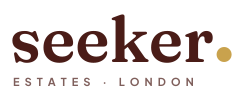
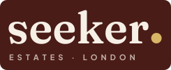

The current logo, a detailed engraving of a mansion inside a magnifying glass, reads "estate agent" and gets lost at small sizes: on Google Ads, favicons, Airbnb profile pictures and phone screens. Here are three directions, built to work at 16 pixels and on a billboard. All three keep the name.
The idea. A London doorway arch with a keyhole cut through it. The round top of the keyhole is the old magnifying-glass lens, simplified. It means a front door for guests and keys handed over for landlords.
Why it wins. The arch becomes a whole visual system: photo frames, area cards and buttons all use it. Green and clay look like a boutique hotel, not an estate agent, and stand out next to the navy and blue that most competitors use.
The idea. Keep the magnifying glass that people already know, redrawn as one bold line icon with a roof inside the lens. Lowercase sans wordmark.
Trade-off. The safest continuity with your current social posts, but it looks more like a property-search app than a hospitality brand, and navy is the most common colour in the sector.


The idea. "seeker." in a warm editorial serif with a brass full stop. Confident and quiet, the way boutique hotels and members' clubs brand themselves.
Trade-off. Very premium, but there's no symbol, so the favicon and profile picture rely on a single letter. It keeps the brass from your current brand guide.
London homes, properly run.
A soft, characterful serif. It replaces Lora and keeps the serif tone of the old logo with more personality.
Book direct and save 10%
A clean, modern sans for labels, buttons and body copy. It replaces Poppins.